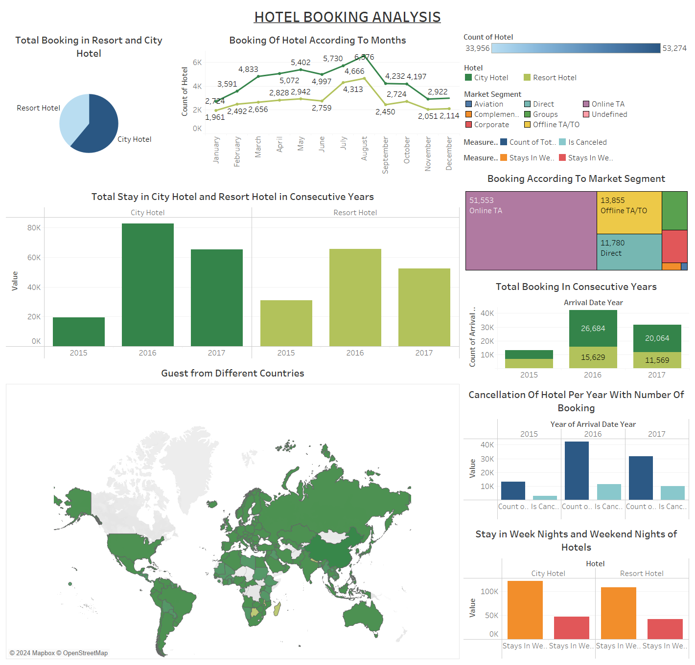

My Projects
A showcase of data analytics pipelines, SQL data engineering, and business intelligence dashboards.
Brazillian E-Commerce
Conducted Exploratory Data analysis, Feature Engineering and validate analytical finding using chi-square test and T-test hypothesis. And created dashboard for same in PowerBI
View RepositoryRedfin Webscrapping
Conducted Exploratory Data analysis, Feature Engineering and validate analytical finding using chi-square test and T-test hypothesis. And created dashboard for same in PowerBI
View RepositoryAmazon Product Dissection an ER Diagram
Conducted Exploratory Data analysis, Feature Engineering and validate analytical finding using chi-square test and T-test hypothesis. And created dashboard for same in PowerBI
View Repository
Hotel Booking Insights Visualization
Built interactive dashboards in Tableau for comprehensive data visualization. Enhanced data storytelling by presenting complex findings clearly.
View Repository
Hotel Booking Analysis
Cleaned and analyzed real-world datasets using Pandas and NumPy to identify hidden correlations and trends, complete with Seaborn visualizations.
View RepositoryJob Portal WebScrapping
Conducted Exploratory Data analysis, Feature Engineering and validate analytical finding using chi-square test and T-test hypothesis. And created dashboard for same in PowerBI
View Repository
Tableau
Conducted Exploratory Data analysis, Feature Engineering and validate analytical finding using chi-square test and T-test hypothesis. And created dashboard for same in PowerBI
View RepositoryTitanic Survival Anlysis
Conducted Exploratory Data analysis, Feature Engineering and validate analytical finding using chi-square test and T-test hypothesis. And created dashboard for same in PowerBI
View Repository